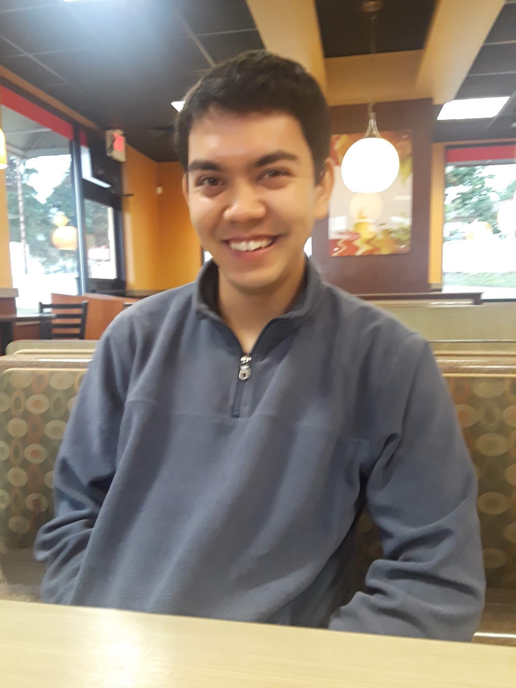

Damon Francisco
 ResumeAbout Me
I'm a software engineer who is working in the aerospace industry. In my free time, I like to create web applications. My favorite programming languages are Python, Java, and JavaScript, but I'm open to learning others to grow my development skills. I've recently been playing with Flask (a Python web framework) a lot. Here's a blog post explaining why I like it so much. Feel free to look at my resume or contact me if you're interested in working on a side project together!
Outside of programming, I like to read and play board games with friends. I mostly like reading non-fiction books about business and science since I can apply what I learn to my life. One book I read recently, Why We Sleep by Matthew Walker highlights the shocking side effects of not sleeping a consistent 8-9 hours per day. The board games I enjoy the most are resource management euro games like Settlers of Catan and Hacienda. I also like social deception games like Spyfall or Secret Hitler even though I'm bad at them!
Projects
Check out this list of all the projects I've worked on in the last year here!
Blog
Sometimes, I like to write about programming or other random topics. I recently wrote a blog that explains why I like the Flask framework here!
Contact Info